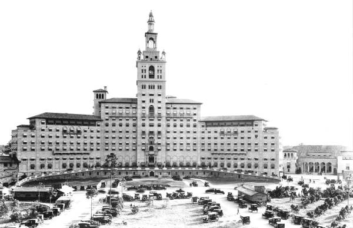
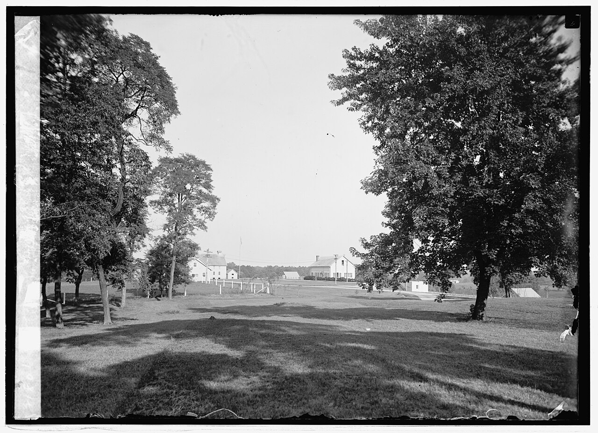
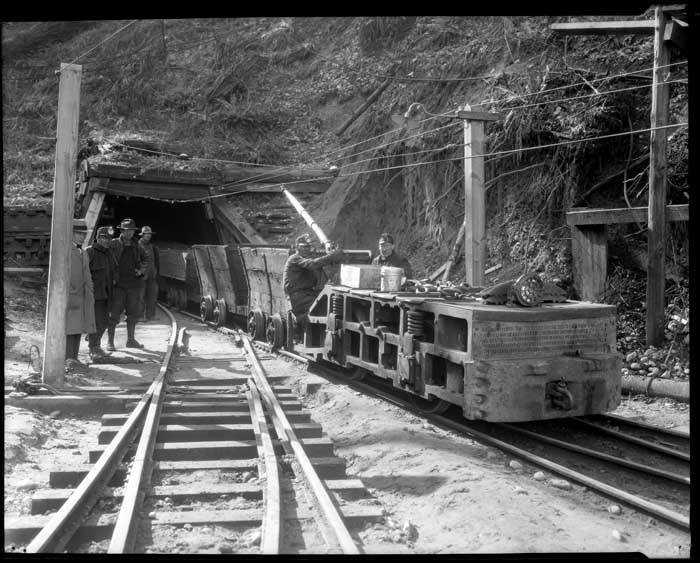
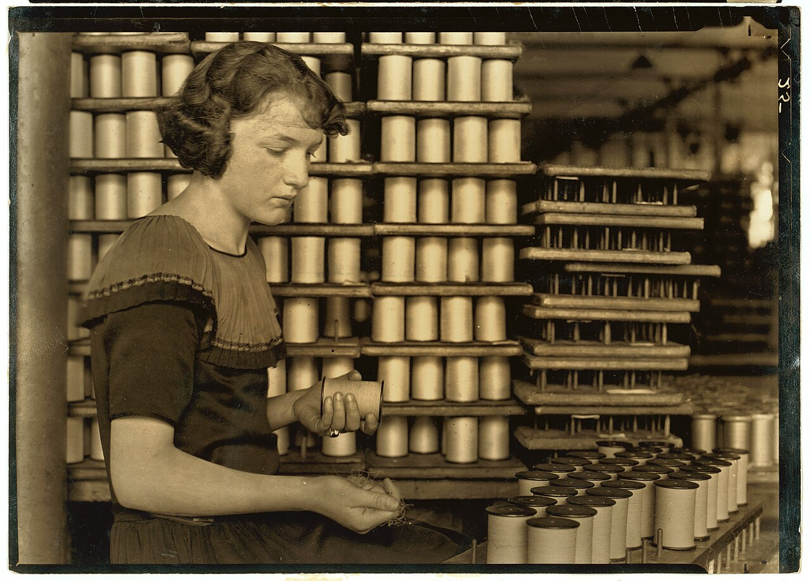

Directions: You are auditing the American economy in the summer of 1929, before the crash. An auditor does not accept the headline version of a business. An auditor checks each part of it. At each station, examine the exhibit, answer the questions, and decide whether that sector was sound, strained, or broken. You will record your marks and defend your audit in Part 2.

Keep the photograph in mind as you work. The Florida land boom looked as solid as this building in January 1926. By the end of 1926, Florida land prices had collapsed and banks that lent on land were failing. The question of this audit is whether the rest of the economy in 1929 was built better than the Florida boom, or only looked that way.
Source: Season average prices received by farmers, U.S. Department of Agriculture figures, rounded to the nearest cent, with a photograph of a Maryland farm in 1924.

| Year | Wheat, per bushel | Corn, per bushel | Cotton, per pound |
|---|---|---|---|
| 1919 | $2.16 | $1.34 | 35 cents |
| 1921 | $1.03 | $0.52 | 17 cents |
| 1925 | $1.44 | $0.69 | 20 cents |
| 1929 | $1.04 | $0.77 | 17 cents |
Read the table as an auditor reads a ledger. Farm costs and farm debts, most of them set during or just after the First World War, did not fall with these prices. A farmer who borrowed in 1919 to buy land or a tractor owed the same dollars in 1929 and had to sell roughly twice as many bushels of wheat to pay them.
Describe the pattern in the table. What happened to farm prices between 1919 and 1921, and had the loss been recovered by 1929? Answer for all three crops.
A farmer proposes to fix his income by planting more acres and producing more. Using the word overproduction, explain why that fix, taken by thousands of farmers at once, made the price problem worse instead of better.
Source: Photograph of the New Black Diamond Mine, Washington, about 1927, with a summary of conditions documented in federal reports on the bituminous coal industry in the 1920s. The summary is an account in compressed form, not a transcript of one man's words.

The account, in summary: A bituminous miner did not work a steady year. His mine opened when orders came in and closed when they did not, so a week of five or six days at the face might be followed by a week of one day, or none. The country had more mines and more miners than its coal orders could keep busy, because oil and natural gas were taking the heating market and every year the railroads and factories burned coal more efficiently. When the union scale came under attack, operators in one field after another cut the daily wage, and a miner who struck against the cut faced an employer who could hire from the crowd of miners already short of work. Rent for a company house, the doctor's fee, and the company store bill came out of his pay whether the mine had run that week or not.
According to the account, why did holding a mining job not mean holding a steady income? Give two separate reasons from the text.
Why was a wage cut hard for miners to resist by striking in the middle of the decade? Answer with the condition of the labor supply and the condition of the coal market.
Source: Photograph of a worker at the Cheney Silk Mills, 1924, with a summary of the benefits and rules that company pamphlets described under welfare capitalism in the 1920s. The summary combines provisions that large employers commonly advertised; it is not the text of a single pamphlet.

The pamphlet, in summary: The company offers a pension for employees who complete twenty years of service, a paid vacation after five years, a plan under which workers may buy company stock in small payments with the company adding to the purchase, athletic teams and a recreation hall, and houses for rent near the plant. The company also maintains a representation plan. Workers elect representatives to meet with managers and discuss grievances, shop rules, and safety. The plan states that representatives may present any complaint and will receive a hearing. Final decisions rest with management. The pamphlet closes by stating that with benefits and representation provided by the company itself, an outside union is unnecessary and would put these benefits at risk.
List the benefits the company offers, and then state what the company asks for in return, in the pamphlet's own logic. Who decides whether the benefits continue?
Under the representation plan, what can worker representatives do, and what can they not do? Why is the second list the one an auditor should weigh more heavily?
Source: Estimated shares of major consumer goods bought on installment plans in the late 1920s. The figures are estimates drawn from contemporary studies of installment selling; studies differ, so the table gives ranges rather than single numbers.
| Good | Estimated share bought on installment plans, late 1920s |
|---|---|
| Automobiles | About 60 to 75 percent |
| Furniture | About 75 to 85 percent |
| Radios | About 75 to 80 percent |
| Pianos | About 80 to 90 percent |
| Washing machines | About 70 to 80 percent |
An installment sale works as follows. The buyer pays a small part of the price at purchase and signs a contract to pay the rest in monthly installments, with a finance charge added. The seller may reclaim the good if payments stop. Through the 1920s, wages for most workers rose slowly, while income at the top rose quickly. The table shows how the consumption of the decade was actually paid for.
What does the table show about how the consumer economy of the 1920s was financed? Support your answer with two rows of the table.
Trace the chain that follows if a large number of buyers lose income and stop paying. Start at the household and end at the factory. Name each step.
Source: Photograph of the crowd outside the New York Stock Exchange on October 29, 1929, a worked example of a margin purchase in round numbers, and a headline from The New York Times of October 30, 1929.

The worked example. A buyer purchases ten shares at $100 a share, a total of $1,000. Buying on margin at ten percent, the buyer pays $100 and borrows $900 from a broker, pledging the shares as security for the loan. If the shares rise to $120, the buyer can sell for $1,200, repay the $900 loan, and keep $300 on a $100 payment. If the shares fall, the broker may demand more cash at once to protect the loan, and may sell the shares without waiting if the buyer cannot pay.
The headline. The New York Times, October 30, 1929, reporting on Black Tuesday: Stocks Collapse in 16,410,030-Share Day, but Rally at Close Cheers Brokers; Bankers Optimistic, to Continue Aid.
Work the example downward. The shares fall to $70 each. What are the ten shares now worth, what does the buyer still owe the broker, and what happens to the buyer's original $100?
The headline reports two things at once. Name both, and explain what the second one shows about how well the market understood its own condition on October 30, 1929.
Record your audit marks. In each blank write S for sound, T for strained, or B for broken, judging the sector as it stood before October 1929.
______ Farms (Station 1)
______ Coal, textiles, and the miners and mill workers in them (Station 2, and the photograph at Station 3)
______ Labor's position: unions, the open shop, and welfare capitalism (Station 3)
______ Household consumption and installment credit (Station 4)
______ The stock market and margin credit (Station 5)
Defend your audit against the headline claim that the economy had looked strong. Write a short paragraph that uses evidence from at least three stations. Your paragraph must answer this objection directly: if so much was strained or broken, why did the economy look prosperous in 1929?
Describe the pattern in the table. What happened to farm prices between 1919 and 1921, and had the loss been recovered by 1929? Prices collapsed between 1919 and 1921 in all three crops. Wheat fell from $2.16 to $1.03 a bushel, a loss of more than half. Corn fell from $1.34 to $0.52, and cotton from 35 cents to 17 cents a pound. Prices recovered partway by 1925 and then fell back. By 1929 wheat stood at $1.04 and cotton at 17 cents, both essentially at their 1921 levels, and corn at $0.77, still far below 1919. The loss had not been recovered in a full decade. Audit guidance: farms are the clearest broken mark on the sheet. A student who marks farms strained should be asked which figure in the table shows recovery.
A farmer proposes to fix his income by planting more acres and producing more. Explain, using overproduction, why that fix made the price problem worse. One farmer producing more can raise his own income if prices hold. When thousands of farmers produce more at once, total supply rises against a demand that is not rising, so the price falls for everyone. That is overproduction: output beyond what buyers will purchase at prices covering costs. Each farmer then needs to sell still more bushels to meet the same debts, which adds more supply and presses the price down again. The individual answer and the collective answer to the same problem point in opposite directions.
According to the account, why did holding a mining job not mean holding a steady income? Give two reasons. First, the work itself was irregular: the mine opened only when orders came in, so days at the face varied week to week and a miner was paid for days worked, not for the year. Second, fixed charges did not vary with the work: company house rent, the doctor's fee, and the company store bill came out of his pay in short weeks as in full ones. A third acceptable reason is that the daily wage itself was being cut as operators attacked the union scale, so even full weeks paid less than they had.
Why was a wage cut hard for miners to resist by striking in the middle of the decade? A strike works when an employer cannot easily replace the strikers and cannot afford to stop. Neither condition held. The labor supply was crowded, because the industry employed more miners than its shrinking orders could keep busy, so an operator could hire replacements from men already short of work. The coal market was shrinking at the same time, as oil and natural gas took heating customers, so an operator facing a strike lost less by closing than an operator in a growing market would have. Weak demand for coal and a surplus of miners together broke the strike weapon in this industry.
List the benefits the company offers, and state what the company asks for in return. Who decides whether the benefits continue? Benefits: a pension after twenty years, a paid vacation after five years, a stock purchase plan with a company contribution, athletic teams and a recreation hall, and company houses for rent. In return, in the pamphlet's own logic, the company asks workers to accept the company itself as their provider and protector and to regard an outside union as unnecessary and as a threat to the benefits. The company decides whether the benefits continue. Every item on the list is a gift that can be revised or withdrawn by the giver, not a term won in a contract the workers can enforce.
Under the representation plan, what can worker representatives do, and what can they not do? Why should an auditor weigh the second list more heavily? Representatives can meet with managers, present complaints, and discuss grievances, shop rules, and safety, and they are promised a hearing. They cannot make a final decision on anything, cannot bargain backed by an independent national union, and have no strike behind their requests. Final decisions rest with management. The second list deserves more weight because representation is measured by what it can compel, not by what it can say. A plan that hears everything and decides nothing leaves power where it was, which is why this organization is a company union rather than a union.
What does the table show about how the consumer economy of the 1920s was financed? Support your answer with two rows. Most large consumer purchases were not paid for out of current income. They were financed by installment contracts, with a small payment at purchase and the rest owed monthly. By the table's estimates, about 60 to 75 percent of automobiles and about 75 to 80 percent of radios were bought this way, with furniture, pianos, and washing machines in the same range or higher. The consumer boom therefore rested on future wages that buyers had already committed.
Trace the chain that follows if a large number of buyers lose income and stop paying, from the household to the factory. The household misses payments and the good is reclaimed or the account goes to collection, so the household cuts all other spending to protect the contracts it keeps. The seller or finance company absorbs losses on reclaimed goods, which sell for less than the balance owed, and tightens or stops new installment credit. Without installment credit, new sales of cars, furniture, and appliances fall sharply, because most buyers bought on time. Dealers then cut their orders, and factories, facing falling orders, cut production and lay off workers. Those layoffs remove income from more households, which restarts the chain one step further along.
Work the example downward. The shares fall to $70 each. What are the ten shares worth, what does the buyer still owe, and what happens to the original $100? Ten shares at $70 are worth $700. The buyer still owes the broker the full $900 loan, because the loan does not shrink when the price falls. The position is therefore $200 under water: selling everything would not repay the loan. The broker demands more cash at once to protect the loan, and if the buyer cannot pay, the broker sells the shares. The buyer's original $100 is gone entirely, and the buyer can owe money beyond it. This is the mechanical reason a falling market fed on itself in October 1929: falling prices forced sales, and forced sales pushed prices lower.
The headline reports two things at once. Name both, and explain what the second shows about how well the market understood its own condition on October 30, 1929. The headline reports, first, a collapse: stocks fell in a record 16,410,030 share day, which was Black Tuesday. It reports, second, reassurance: a rally at the close cheered brokers, and bankers were optimistic and would continue aid. The second item shows that on October 30 the men closest to the market were still framing the collapse as a technical event that bankers could manage, the same confidence the bankers' pool had projected on Black Thursday. The market's own leadership did not yet read the collapse as the end of the speculative structure, even after the heaviest selling day in its history.
Marks will vary at the edges. The defensible pattern is farms broken, coal and textiles broken or strained, labor strained or broken, household credit strained, and the stock market strained or broken. A mark of sound for any sector requires evidence, and the paragraph is where that evidence must appear. Full credit should be awarded if the student: